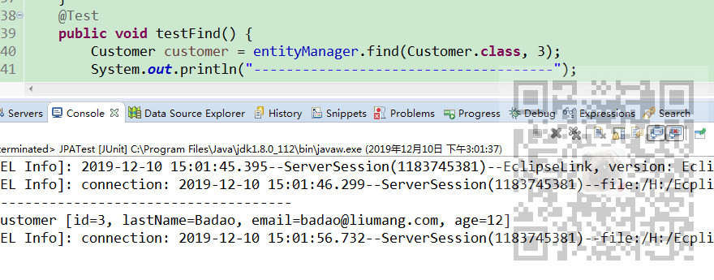
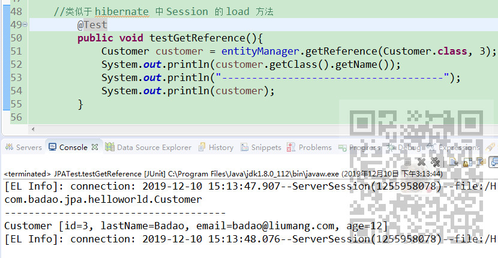

JPA入门简介与搭建HelloWorld(附代码下载)：
https://blog.csdn.net/BADAO_LIUMANG_QIZHI/article/details/103473937
注：
博客主页：
https://blog.csdn.net/badao_liumang_qizhi
关注公众号
霸道的程序猿
获取编程相关电子书、教程推送与免费下载。
返回指定的 OID 对应的实体类对象，如果这个实体存在于当前的持久化环境，则返回一个被缓存的对象；否则会创建一个新的 Entity, 并加载数据库中相关信息；若 OID 不存在于数据库中，则返回一个 null。第一个参数为被查询的实体类类型，第二个参数为待查找实体的主键值。
与find()方法类似，不同的是：如果缓存中不存在指定的 Entity, EntityManager 会创建一个 Entity 类的代理，但是不会立即加载数据库中的信息，只有第一次真正使用此 Entity 的属性才加载，所以如果此 OID 在数据库不存在，getReference() 不会返回 null 值, 而是抛出EntityNotFoundException
测试find方法
@Test
public void testFind() {
Customer customer = entityManager.find(Customer.class, 3);
System.out.println("-------------------------------------");
System.out.println(customer);
}
测试结果

测试getReference方法
@Test
public void testGetReference(){
Customer customer = entityManager.getReference(Customer.class, 3);
System.out.println(customer.getClass().getName());
System.out.println("-------------------------------------");
System.out.println(customer);
}
通过上面的测试可知
find方法类似于hibernate中Session的get方法。
getReference方法类似于hibernate的Session的load方法。
find()做了一次select的操作，而getReference并没有做有关数据库的操作，而是返回一个代理，这样它就减少了连接数据库和从数据库加载持久状态的开销。